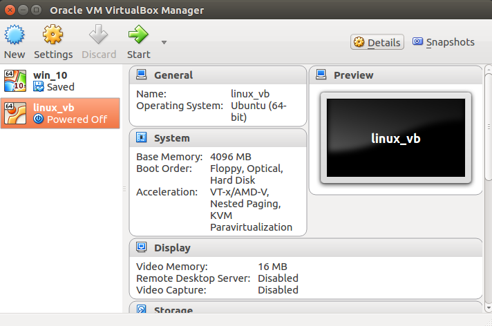
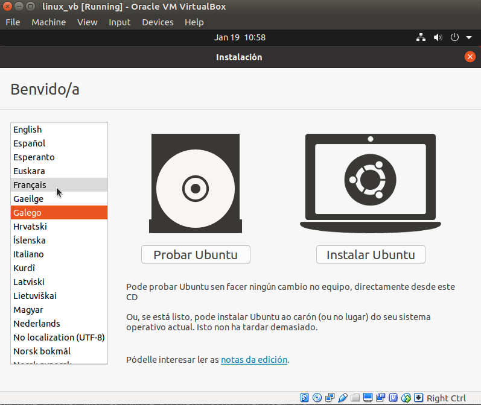
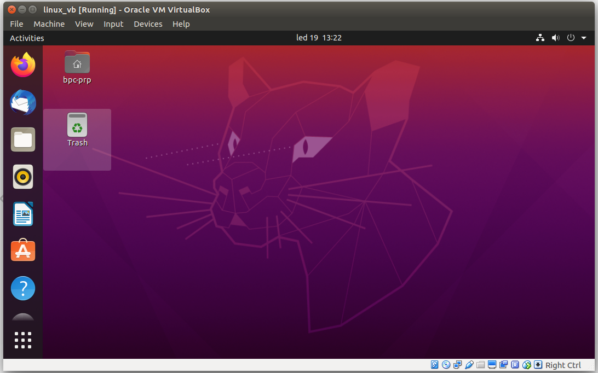

Příprava prostředí
V této kapitole stručně probereme, jak si připravit počítač tak, aby bylo možné začít vyvíjet kód pro BPC-PRP projekt.
V ideálním případě si nainstalujte Linux přímo na Váš počítač, případně je možné jej nainstalovat do virtuálního stroje.
Instalace VirtualBoxu
VirtualBox si nainstalujte podle návodu na příslušném operačním systému.
Postup pro Windows a Mac.
Pro Linux instalace záleží na distribuci a používaném baličkovacím systému. Na Debianu použijte příkaz "sudo apt install virtualbox". Poté bude možné VB aktivovat z terminálu voláním "virtualbox", nebo skrze ikonku v seznamu nainstalovaných programů.

Instalace Linuxu
Stáhněte si obraz instalačního disku Ubuntu 20.04.
Pomocí tlačítka "New" vytvořte nový virtuální stroj. Pojmenujte si jej, zvolte typ operačního systému, nastavte velikost operační paměti (vhodné 4GB a více), vytvořte nový virtuální disk, vyberte typ virtuálního disku (VDI), zvolte dynamickou alokaci disku a na poslední obrazovce vyberte umístění virtuálního disku na svém počítači a zvolte maximální možnou velikost virtuálního disku (10 - 20GB).
Nyní v hlavní obrazovce Virtual Boxu zvolte nově vytvořený virtuální stroj a přejděte do nastavení.
V záložce "System" můžete měnit velikost dedikované operační paměti, měnit počet jader procesorů, která budou pro virtuální stroj dostupná a také můžete zapínat/vypínat HW akceleraci pro virtuální stroj.
Dále v záložce "Display" světšete množství dedikované video paměti na maximum (128MB).
V záložce "Storage" klikněte na položku s obrázkem CD a následně úplně v pravo klikněte pravým na ikonku CD s malou šipečkou. Tím otevřete okno pro nastavení cesty k instalačnímu obrazu Ubuntu, které jsme dříve stáhli na počítač. Zavřete nastavení tlačítkem OK.

Nyní v hlavním okně Virtual Boxu aktivujte virtuální stroj tlačítkem start.
Pokud je vše nastaveno korektně, stroj nabootuje z instalačního obrazu.

Zvolte jazyk operačního systému (doporučeno angličtinu), zvolte rozložení klávesnice (doporučeno English US), a nechte pokračovat "Normal Installation".
Dále se Vás proces dotáže, zda chcete "Smazat disk a nainstalovat Ubuntu". Pokud nemáte konkrétní přání, jak si nastavit rozložení na disku, souhlaste s touto volbou. Systém Vám vypíše způsob, jakým rozdělí disk. Souhlaste.
Nyní zvolte časové pásmo a dále si vytvořte účet s heslem.
A dále už jen počkejte, až se systém doinstaluje a provede se reset virtuálního stoje.
Po opětovném nabootování v horní liště okna virtuálního stroje zvolte záložku "Devices" a "Insert Guest Additions CD Image". Za okamžik vyskočí okno, které se dotáže zda má aktivovat autorun vloženého CD. Souhlaste. Systém si vyžádá heslo a poté se doinstalují ovladače pro virtualizovaný hardware.
Po dalším sestartu máte připarevený virtuální stroj s nainstalovaným Linuxem Ubuntu 20.04.

Jako alternativu si stáhněte obraz virtuálního stroje s nainstalovaným Ubuntu zde.
Instalace ROS
Instalaci ROSu na nově nainstalovaný Linux proveďte pomocí návodu popsaného v kiapitole Robotic Operating System.
CLion
CLion si do nově nainstalovaného systému stáhněte z oficiálních stránek (viz CLion)